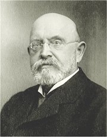

Marold: Bitva u Lipan

Aleš: Setkání Jiřího z Poděbrad s Matyášem Korvínem
Aleš: Jan Sladký Kozina
|
ČESKÁ HISTORICKÁ PRÓZA
Na rozdíl od autorů romantických historických próz si realisté dějiny méně idealizovali. Studovali pečlivěji historické prameny a více je respektovali. Přesto si mnohé museli vymýšlet. Někdy chápali líčení historických zvratů jako paralelu k současnosti. Spisovatelé ukazovali, jaký měly historické události vliv na osudy obyčejných lidí. Zobrazovali nejen slavné historické postavy, ale také řadové příslušníky různých společenských vrstev – většinou jako určité reprezentativní typy sociálních skupin nebo lidských charakterů. Spisovatelé užívali archaismy a historismy, aby se minulosti přiblížili také jazykem. Jejich knihy byly daleko čtivější než vědecká historická pojednání, a proto dokázaly dějiny přiblížit řadovým čtenářům.
V Čechách plnila historická beletrie také mimoestetické funkce. Byla náhražkou za chybějící politické svobody a národní sebeurčení. Autoři chtěli v lidech posilovat vlastenectví a národní uvědomění, snažili se čtenáře vychovávat i bavit. První historické prózy českých realistů pocházejí ze 70. let 19. století. Tento žánr byl ovšem oblíbený ještě začátkem 20. století.
Historické náměty maloval Jaroslav Čermák (1830-1878), Mikoláš Aleš (1852-1913), Václav Brožík (1851-1901) nebo Luděk Marold (1865-1898), autor panoramatického výjevu Bitva u Lipan.

Brožík: Jan Hus na koncilu kostnickém
|
Světová historická próza
Ze zahraničních autorů se historické beletrii věnoval Polák Henryk Sienkiewicz (1846-1916), nositel Nobelovy ceny za literaturu a autor románů Křižáci nebo Quo vadis o hrůzovládě římského císaře Nerona. Gustave Flaubert napsal román Salambo o válkách mezi starověkým Římem a Kartágem. Za historický román lze považovat i Tolstého Vojnu a mír. Realisté se ale věnovali především současnosti a minulost je příliš nelákala.
Čteš historické romány? Proč?
Které autory máš nejraději? Představ jednoho z nich v samostatném referátu.
Přelož výraz „quo vadis“ do češtiny.
Jaký je rozdíl mezi archaismem a historismem z hlediska nauky o slovní zásobě?
|
Alois Jirásek (1851-1930)
Jirásek se narodil v Hronově a zemřel v Praze. Původně chtěl být malířem, ale z existenčních důvodů zvolil historii. Působil jako středoškolský učitel dějepisu v Litomyšli a Praze. Přátelil se s kreslířem Mikolášem Alšem. Rozsah jeho díla je obdivuhodný. Ve svých prózách zmapoval celou českou historii. Pro děti sepsal Staré pověsti české. Epochu husitství líčí trilogie Mezi proudy, Proti všem a Bratrstvo. O vládě Jiřího z Poděbrad pojednává nedokončený román Husitský král a převyprávění cestopisu Václava Šaška z Bířkova Z Čech až na konec světa. Pobělohorské období zachytil v románech Temno, Psohlavci, Skály nebo Skaláci. Počátky národního obrození popisuje F.L.Věk. Na přelomu 18. a 19. stol. se odehrává románová kronika U nás. Revoluční rok 1848 líčí Filosofská historie. Psal také divadelní hry – historické Jan Žižka, Jan Hus a Jan Roháč i realistické – Vojnarka, Otec nebo Kolébka. Nejznámější je ovšem pohádkové drama Lucerna.
Zjisti, které další knihy Jirásek napsal. O čem pojednávají?
Aleš: Plakát na Sebrané spisy Aloise Jiráska
Jirásek hledal podklady pro svá díla v archivech, ale ne vždy se zcela držel historické skutečnosti. Postavy přemisťoval do jiné doby, leccos si musel domyslet atd. Chtěl čtenáře vzdělávat a vychovávat. Snažil se historii přiblížit laikům. Svým dílem přispěl k vytvoření řady národních mýtů – husitství a obrození jako vrchol českých dějin, baroko jako doba temna.
V čem Jiráskova koncepce českých dějin neodpovídá pravdě?
Zdeněk Nejedlý (1878-1962)
Muzikolog a marxistický literární vědec Zdeněk Nejedlý byl velkým zastáncem Jiráska. V době meziválečné ho bránil proti útokům levicové kritiky a po roce 1948 vydal Jiráskovy spisy v obrovském nákladu, aby se dostaly do každé domácnosti. Nejedlý vyzdvihoval v Jiráskově díle kolektivnost a revolučnost knih o husitství nebo protikatolické zaměření Temna, čímž jeho odkaz ještě více schematizoval...
Co víš o Nejedlém?

Adolf Liebscher: Výlet na Říp
|
Alois Jirásek: Staré pověsti české
Staré pověsti české psal Jirásek přímo pro mládež. První část knihy obsahuje nejstarší české báje o příchodu praotce Čecha, Krokovi, Bivojovi, Libuši, Přemyslovi, dívčí válce, Horymírovi a lucké válce. Další pověsti zahrnují dobu křesťanskou. Vyprávějí o králích Svatoplukovi a Ječmínkovi, rytíři Bruncvíkovi, bílé paní nebo zbojníku Janošíkovi. Značnou pozornost Jirásek věnoval staré Praze – Žito kouzelník, Staroměstský orloj, O Daliborovi z Kozojed, Ze Židovského Města či Faustův dům. Kniha končí proroctvími Sibyly a slepého mládence. Poslední je pověst o blanických rytířích.
Alois Jirásek: Proti všem
Druhá z výpravných románových trilogií o husitství Proti všem líčí léta 1419 a 1420. Časově navazuje na trilogii Mezi proudy o počátcích husitského hnutí a předchází třídílnému Bratrstvu o osudech zbytků táborských vojsk, která se po bitvě u Lipan uchýlila pod vedením Jana Jiskry z Brandýsa na Slovensko. První část trilogie Proti všem nese název Skonání věku a líčí založení Tábora, Kruciata popisuje střet mezi vojsky Jana Žižky z Trocnova a Zikmunda Lucemburského na pražském Vítkově a poslední část Boží zástup se zaměřuje na husitské sekty, především tábory a adamity. Na tomto historickém pozadí se odehrává milostný příběh kněze Bydlinského a Zdeny (dcery Ctibora z Hvozdna), který končí jejich tragickou smrtí, když je upálí zfanatizovaný dav.
Alois Jirásek: Temno
Děj románu Temno se odehrává na začátku 18. století v Praze a Skalce u Opočna. Protireformace zasáhla celou společnost. Jezuité pátrají v domě protestantského myslivce Machovce po zakázaných knihách. Ten se sice zachrání útěkem do Žitavy, ale jeho děti – Helenka a Tomáš skončí v katolických rodinách. Tomáše má převychovat pražský sládek Březina, přesto se dále stýká s tajnými nekatolíky. Helenka žije u Březinovy tchýně a zamiluje se do Jiříka Březiny, kterého čeká dráha katolického kněze. Machovec chce, aby za ním děti odešly do Žitavy, ale Helenka je odhodlána zůstat s Jiříkem v Čechách. Kniha končí slavnostní kanonizací Jana Nepomuckého. Jako symbol fanatické rekatolizace je zde vylíčen jezuita Koniáš.
Alois Jirásek: F.L.Věk
Hlavní postavou pětidílného životopisného románu je František Ladislav Věk. Věk se z rodné Dobrušky dostává jako student do Prahy. Spřátelí se zde s řadou obrozenců – páterem Vrbou, Václavem Thámem, Hněvkovským nebo Krameriem. Zamiluje se do němé dcery úředníka Butteaua Pauly, ale tu si nakonec vezme jeho přítel Thám. Věk se vrací do rodné vsi, přebírá po otci obchod, půjčuje sousedům knihy a šíří myšlenky českých vlastenců. Uspořádá výpravu do Prahy ke korunovaci Leopolda II., kam jede společně s budoucí manželkou Márinkou. Thám upadá do bídy a kočuje na venkově s německou hereckou společností. Požár Dobrušky roku 1800 postihne i Věka, ale s pomocí přátel se zase vzmůže. Poslední dva díly románu vyprávějí o osudech Věkova syna Vašíka.
|

Převyprávěj nejznámější báje ze Starých pověstí českých.
Srovnej Jiráskovy pověsti s příběhy zachycenými v českých kronikách.
Ze kterých pramenů Jirásek vycházel?
Znáš i jiné pověsti, které Jirásek nezpracoval?

Přípravná kresba Aloise Jiráska k románu Mezi proudy
Jak si počínali husité při dobývání Přiběnic?
Která přikázání Desatera porušovali?
Co si myslíš o pražanech, táborech a „božím zástupu“?
Proč nese román název Proti všem?
Jak nazýváme čtyřdílný a pětidílný románový cyklus?

Čermák: Po bitvě na Bílé Hoře
Jak je v ukázce vylíčen jezuita Koniáš? Byl opravdu takový?
Název Jiráskova románu Temno se stal symbolem celého pobělohorského období české historie. Šlo opravdu o dobu temna? Pro koho?
Odpovídá toto pojetí ději románu?
Co bylo v době baroka pozitivní a co negativní? Jak se na toto období díváš ty?
Kdy psal Jirásek Temno? Myslíš si, že to mělo nějaký vliv na obsah románu?

Kašparova ilustrace k románu F.L.Věk
Které další knihy ilustroval Adolf Kašpar (1877-1934)?
Předlohou pro postavu F.L.Věka byl národní buditel F.V.Hek. Co mají společného?
Co víš o Thámovi, Krameriovi a Hněvkovském? Kteří buditelé v románu vystupují?
Charakterizuj postavu jazykového puristy.
V čem jde jeho metoda tvoření nových slov proti duchu samotné češtiny?
|
Zikmund Winter (1846-1912)
Winter se narodil v Praze, zesnul v rakouském Reichenhallu. Po otci převzal práci zvoníka. Vystudoval Akademické gymnázium a historii na univerzitě. Učil na středních školách v Pardubicích, Rakovníku a Praze.
Studoval archivní materiály a psal historická pojednání – V měšťanské světnici starodávné nebo Zlatá doba měst českých. Věnoval se hlavně povídkové tvorbě – Rakovnické obrázky (Nezbedný bakalář), Rozina sebranec. Výjimkou je román Mistr Kampanus.
|
Zikmund Winter: Mistr Kampanus
Životopisný román Mistr Kampanus se odehrává v letech 1612 až 1622. Jan Kampanus přednáší na Karlově univerzitě. Jeho smysl pro čest a spravedlnost mu zabrání dát doporučení slabému studentovi Mollerovi. Ten ale všemi prostředky usiluje o profesuru. Po bitvě na Bílé hoře sleduje Kampanus s hrůzou exekuci 27 českých pánů na Staroměstském náměstí. Popraven je i rektor univerzity Jessenius. Mollerus se zmocní univerzitní pokladnice i insignií. Aby Kampanus zachránil školu před převzetím jezuity, přestoupí na katolickou víru a stává se rektorem. Jeho oběť ale byla zbytečná – Karolinum připadlo jezuitům z Klementina a Kampanus musí odejít. Rezignovaný učitel se nakonec otráví utrejchem.
|
Charakterizuj postavu Mollera.
Jak Kampanus prožívá pobělohorské události?
Jan Kampanus Vodňanský skutečně žil. Srovnej jeho osudy s románovou postavou.
|
Václav Beneš Třebízský
(1849-1884)
Tento kněz se narodil v Třebízi u Slaného a zemřel v Mariánských Lázních. Psal hlavně kratší prózy – Povídky karlštejnského havrana, Levohradecká povídka, V červáncích a lesku kalicha, Pobělohorské elegie nebo Z různých dob. Je autorem románů Anežka Přemyslovna, Královna Dagmar, Trnová koruna a Bludné duše.
|
Václav Beneš Třebízský: Královna Dagmar
Hlavní postavou románu Královna Dagmar je dcera Přemysla Otakara I. a Adléty Míšeňské Markéta (1186-1213), která se vdala za dánského krále Valdemara. Pomáhala svému muži urovnat vladařské spory a v době moru pečovala o prosté obyvatele. Dánové si ji natolik oblíbili, že se stala hrdinkou řady písní. Nazývali ji Dagmar, což znamená „denní paní“. Autor čerpal historický materiál v Palackého Dějinách národu českého, odtud zřejmě pramení negativní pohled na Němce a vyzdvihování slovanského živlu.
Další autoři a jejich díla
Josef Svátek: Paměti katovské rodiny Mydlářů v Praze, Tajnosti pražské, Majestát Rudolfa II.
August Sedláček: Sbírka pověstí historických lidu českého v Čechách, na Moravě a ve Slezsku
Teréza Nováková: Jan Jílek, Drašar
|
V čem Dagmar připomíná světici?
Proč nebyla svatořečena?
Které české světice znáš? Čím prosluly?
Znáš i jiná díla o královně Dagmar? Kdo je napsal?
|
Internetové stránky
Jirásek: O Libuši, Staré pověsti české
Winter: Zlatá doba měst českých
Třebíz, skanzen
Feřtek: Blaník, článek
Exkurze
Marold: Bitva u Lipan, Praha
Marold: Bitva u Lipan, Praha
Jiráskův Hronov, přehlídka amatérských divadelních souborů
Třebíz, skanzen
Karel Javůrek: Smrt Jana Žižky z Trocnova
|
Doporučená četba
Aleš, Mikoláš: Špalíček národních písní a říkadel, Odeon, Praha 1971
Aleš a Jirásek, Listy dvou přátel, ELK, Praha 1947
Beneš Třebízský, Václav: Královna Dagmar, Vyšehrad, Praha 1989
Beneš Třebízský, V.: Z letopisů a kronik, Vyšehrad, Praha 1950
Dílo Mikoláše Alše (13 svazků)
Janáčková, Jaroslava: Alois Jirásek, Melantrich, Praha 1987
Jirásek, Alois: F.L.Věk (5 svazků)
Jirásek, A.: Husitská trilogie, SNKLHU, Praha 1955 (dramata Jan Hus, Jan Žižka, Jan Roháč)
Jirásek, A.: Odkaz národu (32 svazků), ed. Z.Nejedlý
Jirásek, A.: Psohlavci, Historický obraz, SNDK, Praha 1951
Jirásek, A.: Staré pověsti české, Odeon, Praha 1985
Jirásek, A.: Vojnarka, Otec, Lucerna, SNKLHU, Praha 1955 (dramata)
Jirásek, A.: Z mých pamětí, Mladá fronta, Praha 1980
Johanides, Josef: František Vladislav Hek, Melantrich, Praha 1976
Nejedlý, Zdeněk: Alois Jirásek, Svoboda, Praha 1949
Pešat, Zdeněk: Boj o Aloise Jiráska v zrcadle kritiky, Praha 1954
Sienkiewicz, Henryk: Quo vadis
Stejskal, Martin: Labyrint tajemna aneb Průvodce po magických místech Československa, Paseka, Praha 1991
Stuchlý, F., Šach, J.: Nedokončená pouť, Čtení o Václavu Beneši Třebízském, Praha 1959
Winter, Zikmund: Mistr Kampanus, Československý spisovatel, Praha 1974
Winter, Z.: Rozina sebranec a jiné prózy, Odeon, Praha 1966
|
Vypracuj písemný referát o některé z uvedených knih.
Vyber nejdůležitější události z české historie. O jedné z nich napiš povídku.
Jak tato událost zasáhla do života lidí?
František Čermák: Dalibor v žaláři
|
|